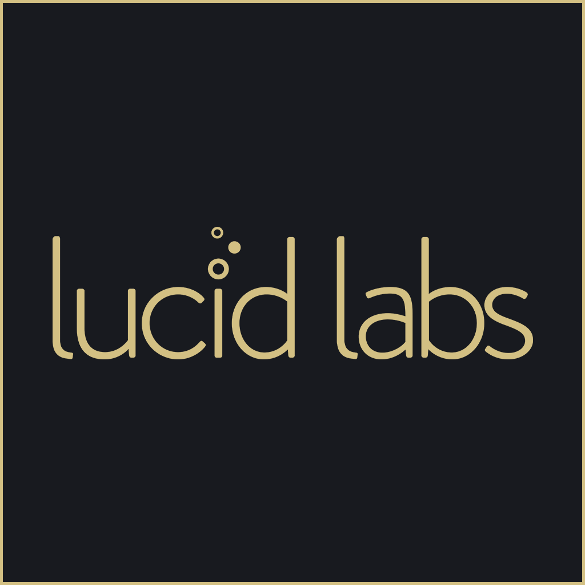

Description
Lucid Labs is an independent game development studio from India who likes to work on games which are experimental and artistic in nature. Lucid Labs consists of a single man, a man who thinks collaborating with new people from all over the world for each game is sheer fun and joy. We like to craft experiences which are innovative and involve human emotions. We make games (not) for the masses.
History
Early history
Initially, Lucid Labs was formed just to name the Google Play Store account which was going to publish our first commercial game 'ROTO.' ROTO helped us build the team in the first place. That game was developed in a 24-hour international game jam called 'Global Game Development Competition' and was developed by a few friends studying together in a game design college. We managed to get an 'Honourable Mention' in the competition, and because of the feedback and the result of the competition, we decided to develop it into a full game and release it on mobile platforms. Hence, Lucid Labs was formed.
After that
Now that we had a team, a team name and a game to produce, we spent almost 6 months working on the weekends in our hostel rooms and sometimes classrooms, to make a game which we all saw as the next big thing. Living in the hostel, and a game design college, we were able to utilize the power of playtesting and released the game on Android. Why Android first, you may ask? Because none of us had an Apple computer to make an iOS build. So yes, we released the game on Android and immediately after, we submitted the game for 'Casual Connect Asia, Indie Prize' and got nominated for the 'Best Free-to-Play' award. Boy, we were stocked. And we attracted some attention too. Both from the press and the publishers. We were offered a lot of publishing deals at the event and decided to go with an SEA publisher called 'Weraku Games' who promised to help us financially and on the marketing side. After about 3 months of refining and developing the game further based on the publisher's feedback, we released the game on the App Store. To our surprise, we got featured on App Store twice, under 'Best New Games,' an achievement we wouldn't' have achieved without Weraku's help. We were, however, not a registered company when we released ROTO, but after a successful first game, Chirag decided to form a permanent startup to continue making games, with the vision to make something artistic and experimental with emotional values. His view was to create imaginative games but not with a permanent team, but with collaborators from all over the world. This was his idea of having fun while making games. After ROTO, Lucid Labs (Chirag) made a game called Stay, Mum collaborating with people from Singapore and London and managed to win an Editors' Choice for the same. This was when he knew his idea of making games with new mates for each project might work out. He continues collaborating with talented people from all over the world, diving deep into his favorite game dev topics: story-telling, human emotions, and innovative mechanics.
Projects
Videos
Possessions AR Trailer — YouTube
Possessions Trailer — YouTube
ROTO Trailer — YouTube
Stay, Mum Trailer — YouTube
Images
{kind=link}
{kind=link}
Logo & Icon
{kind=link}
Awards & Recognition
- Apple Arcade Launch Partner - Apple, 2019
- Google Indie Games Accelerator, Batch 1 - Google, 2018
- Official Selection: Unite India - Unity, 2018
- Official Selection: Unite India - Unity, 2017
- Runner-Up: Best Upcoming Game of the Year - NGDC, 2017
- Nominee: Best Free-to-Play - Casual Connect Asia, 2014
Selected Articles
-
Indie games from India level up!
Jason Johnson, Intel IQ -
Indie developers in India are channeling their history into exciting new games
Matt Suckley, PCGamer -
Indie game theory featuring Possessions
Sneha Bhura, The Week -
2015 in Review: Chirag Chopra on making more emotional experiences
Ric Crowley, PocketGamer.biz -
Stay, Mum and the state of games as an art form in India
Matt Suckley, PocketGamer.biz -
Made in India, made by indies
Matthew Handrahan, Gamesindustry.biz
Team & Repeating Collaborator
- Chirag Chopra
- Founder - Game Design and Art
- Jibran Gillani
- Code
Contact
- Inquiries
- hello@lucidlabs.in
- twitter.com/notthatchirag
- Web
- www.lucidlabs.in